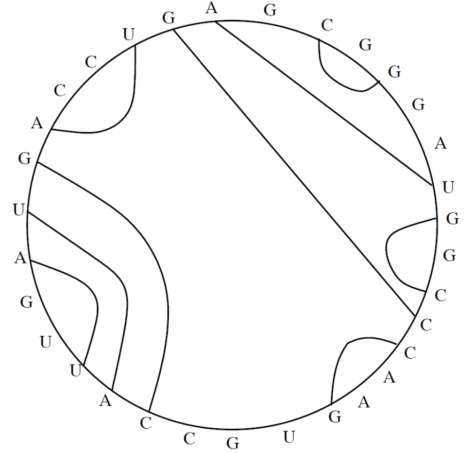
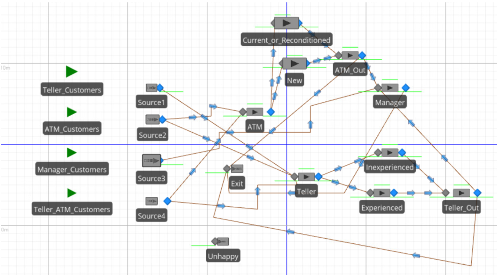
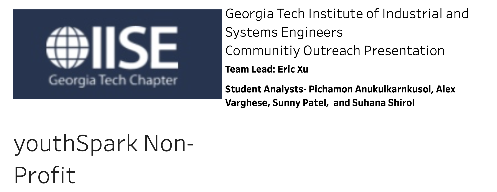

Projects:
This Website
January 2022 - Current

Throughout my college years,
I have worked on several projects and I wanted to present them in a way
where anyone can easily read about them. I first uploaded my projects to GitHub.
However, I felt that through a portfolio project website I would be able to present them
in a more visually appealing way. The only HTML and CSS experience I had before creating this
website was through web scraping using Python and BeautifulSoup. I learned how to make a website
from YouTube using Github Pages and HTML templates online.
By creating this website I was able to
build a better understanding of HTML, CSS, and Github Pages.
Nucleic Acid Folding Problem
April 2022 - May 2022

During the spring 2022 semester, I worked on solving variations of the
Nucleic Acid Folding Problem with 2 peers in a class called ISYE 3133 Engineering Optimization.
The Nucleic Acid Folding Problem is a classic problem in Computational Biology which has often been
solved using dynamic programming. In this project, we used Integer Linear Programming to obtain the
same results as the Dynamic Programming approach, and extended our model to more complex versions of
this problem that are harder to solve using Dynamic Programming. The file Simple_Model solves the Simple
Nucleic Acid Folding Problem where given a nucleotide sequence we find the maximum number of pairs.
Two characters are a pair if the characters in the pair are {A,U} or {C,G} and no pairs may cross. The
picture above is an example of a solution to the simple model. The next file Simple_Enhancements adds
biological enhancements to our model where the minimum distance between pairs must be at least 3 away,
different pairs have a stronger weight, and we allow non-complementary matched pairs {G,U} and {A,C}.
The next file Base_Stacking adds the enhancement of quartets where two pairs are next to each other and
this allows a Nucleic Acid Fold to be stronger. For example in the picture above {C,G}, {A,U}, and {U,A}
make up 2 stacked quartets. The next file Weighted_Stacked adds the enhancement that some stacked quartets
have a stronger weight than others. The next file position_quartet adds the enhancement that the positioning
of a quartet within a stack may have a larger weight. The final file Crossing_10 combines all the
enhancements and allows 10 intersections between pairs.
By completing this project and class, I was able to learn about Operations Research and the
formulation of constrained decision-making models to solve real life problems with the use
of Gurobi.
Small Bank Branch Case Study
April 2022 - May 2022

During the spring 2022 semester, I worked on a Small Bank Branch Case Study
with 3 peers in a class called ISYE 3044 Simulation Analysis and Design. We used SIMIO to model the bank
branch which is open from 9:00am to 5:00pm on weekdays and consists of an ATM, tellers, and a manager.
There are 4 types of customers with customers just going to the ATM, Teller, or Manager, and customers
either going to the ATM or Teller depending on which line is the shortest. The project outlined different
criteria for when a customer is unhappy. If the queue lengths are too long or if they wait in a queue for
too long then a customer will become unhappy. For every unhappy customer the bank loses $100. The bank has
to figure out how many tellers to have during each shift and how many ATMs they should have to reduce the
number of unhappy customers. However, purchasing ATMs and hiring more tellers results in an increase in
overall costs. My team and I modeled the bank in SIMIO and used OptQuest to find the optimal conditions
that would reduce overall costs for the bank resulting from unhappy customers, purchases of additional
equipment, and hiring of inexperienced/experienced staff.
By completing this project and class, I was able
to develop an understanding of Simulation Modeling as a tool for operations research.
Community Outreach Consulting Project with YouthSpark
September 2021 - December 2021

During the fall 2021 semester, I joined an organization called GT IISE, also known
as Georgia Tech Institute of Industrial and Systems Engineers. Through this organization, I was able to work
with a team of 5 students on a consulting project with a non-profit called YouthSpark. YouthSpark is a haven
where youth who have suffered abuse, neglect, and trauma can find the legal and social support they need to
begin down a positive path. One of the main issues that the organization faced was creating a dashboard that
encompasses visualizations and descriptive statistics or demographics that would be easily understood by a
non-technical audience. This dashboard must also appeal to stakeholders by providing specific statistics in
order for YouthSpark to be able to obtain funding for their organization. My team and I were able to build
an interactive dashboard using Tableau. I was able to contribute two visualizations to this dashboard.
By
participating in this project I was able to build a better understanding of Tableau as well as build upon
my data input and manipulation skills with Python Pandas and Jupyter Notebook.
Travel Reservations Service Project
August 2021 - December 2021

During the fall 2021 semester, I worked on making a Travel Reservations Service
using MySQL server with 4 peers in a class called CS 4400 Introduction to Database Systems. This project
consisted of 4 phases with each phase serving as a checkpoint during the semester. In phase 1, we were
assigned with a scenario description which we had to translate into an Enhanced Entity-Relationship Diagram.
In phase 2, we were assigned to translate the EERD into relational schema; translate the relational schema
into create table statements
with appropriate data types, primary, unique, and foreign keys; write insert statements to import the
initial data into the tables we created, and document all unhandled constraints based on our design and
implementation choices. In phase 3, we were assigned to implement 16 stored procedures which allow the system
operators to modify the database state in accordance with various use cases, and implement 6 views which provide
information to the system operators about the database state from various perspectives. Phase 4 of the project was
optional and we were assigned to build a fully functional application integrated with the database system. We did
not complete this part of the project however my approach would have been to use PyQt5, QtDesigner, and Python in
order to build the desired Graphical User Interface.
By working on this project throughout the fall 2021 semester,
I was able to learn a lot about MySQL Server, relational database development, and SQL queries.
Predicting Prices of the New York Stock Exchange
November 2021 - December 2021

During the fall 2021 semester, I took a class called CS 4641 Machine Learning.
In this class, we were assigned to research a problem or application in which machine learning would help.
With a group of 4 peers, we decided to predict the price of the New York Stock Exchange for various global
stock exchanges based on previous daily price data. We used a stock exchange dataset from Kaggle which
containes daily price data collected from Yahoo Finance for indexes tracking stock exchanges from all over
the world. Predicting stock prices is considered extremely challenging due to the complex nature of the
stock market. By being able to determine the future movement of stock prices, investors can make profit
while also minimize their risk. Currently, one of the most commonly used stock prediction methods in the
economic and financial fields is the ARIMA (AutoRegressive Integrated Moving Average) model, which is a
statistically-based machine learning algorithm. It is known to be robust and efficient for time series
forecasting in the short term. A potential problem with this method is that ARIMA assumes that the
sequential input data was generated from a linear process. Thus, its prediction might be ill-suited
for nonlinear problems. Since stock market behavior is highly nonlinear and exhibits uncertain behavior
that changes with time, our team decided to implement a neural network-based solution, specifically
using RNNs. We used univariate and multivariate LSTM networks which are types of recurrent neural networks
that are structured to learn order-dependence for sequence prediction. A significant trend we discovered
was that compared to ARIMA and the univariate LSTM, our multivariate LSTM consistently predicted trend
changes before the other two models. This is critical to most use cases of the model like investment
decisions or economic health prediction. Our best model out performs old industry techniques that did
not use neural networks. However there are a variety of novel neural networks and other stochastic
prediction models that have been developed in the last decade that were beyond the scope of our knowledge.
Overall by completing this project, I was able to learn a lot about modeling and prediction of data using
machine learning.
KPMG Virtual Work Experience Program
June 2021 - July 2021

During summer after my sophomore year, I completed a KPMG Data Analytics
Consulting Virtual Internship project hosted by a platform called Forage. Forage is an open access
platform designed to unlock exciting careers for students by connecting them with company-endorsed
Virtual Work Experience Programs. Virtual Work Experience Programs are online programs built and
endorsed by leading companies. They contain a series of resources and tasks designed to simulate
the real-world experience of starting a career. With the KPMG program, I was assigned to analyze
customer and transactions data for a fictional bike store called Sprocket Central Pty. Ltd so that
they could optimize their marketing strategy. There were three phases to the project, Data Quality
Assessment, Data Insights, and Presentation of Data Insights. The first phase consisted of preliminary
data exploration and identifying ways to improve the quality of Sprocket Central Pty. Ltd’s data.
The second phase consisted of analyzing a list of 1000 potential customers to obtain useful customer
insights which would in return optimize resource allocation for targeted marketing. The third phase
consisted of turning these insights into visualizations.
By completing this project, I was able to get
a sense of what it looks like to complete a data analytics project in a formal setting, and build on my
data input and manipulation skills through the use of Python Pandas, Excel, Jupyter Notebook, and a
declarative statistical visualization library for Python called Altair.
COVID-19 Data Analytics Project
November 2020 - December 2020

During my fall 2020 semester, I took a class called CS 2316 Data Input and
Manipulation where at the end of the semester we were assigned to complete a data analytics project on
a topic of our choosing. With one peer, we decided to analyze effectiveness of health expenditure as a
predictor of a country's standard of living and COVID19 severity. A significant motivation for this topic
was the COVID19 pandemic that has affected nearly every country in the world. We wanted to see if there are
factors that act as strong predictors of a country's handling of the pandemic and if they are related to
general standard of living measures. Our first goal was to find out the correlation between average health
expenditure for each country and the total number of COVID19 cases as a percentage of the population. We
found that there is a negative correltion between Health Expenditures and COVID 19 deaths. We found no
correlation between health expenditures and COVID 19 Cases and Tests as the data was too clustered. Our
second goal was to find how strongly different measures of health expenditure a percentage of total GDP
correlate to standard measures of standard of living. We found that health expenditure as a percentage
of total GDP was a weak predictor however health expenditures in USD was a strong predictor. Our third
goal was to compare measures of health expenditure to a standard measure of income inequality. We found
that there is no correlation. However, health expenditure used along with GINI can be a strong predictor
of standard of living. This project is an example of an ETL (Extract, Transform, Load) system - extracting
data from one or more sources, enforcing data quality and consistency, organizing the data in a way to
provide easy access to the significant features of the data, and then exporting it back in a user-friendly
format so that end users can make meaningful decisions from the results. With this project I was able to
apply all of the skills I had learned through the course onto a pandemic that I was living through.
By
completing this project and the course, I was able to gain my first experience with data input and
manipulation through Python.
Software Development Projects
January 2020 - May 2021

During the fall 2019, spring 2020, and summer 2021 semesters,
I have taken many introductory computer science classes such as CS 1301 Introduction to
Computing and Programming, CS 1302 Software Development, and CS 1332 Data Structures and Algorithms.
Over the course of these classes I have worked on various software development projects. I implemented
the Minesweeper arcade game using Java, version control, build management, debugging, and unit testing;
I designed a Graphical User Interface application using JavaFx 11 and iTunes Search API on a Unix
environment, and I developed and implemented various data structures and algorithms to learn Complexity
Analysis.
By taking these courses and completing assigned projects, I was able to gain a strong foundation
in Java and Computer Science.